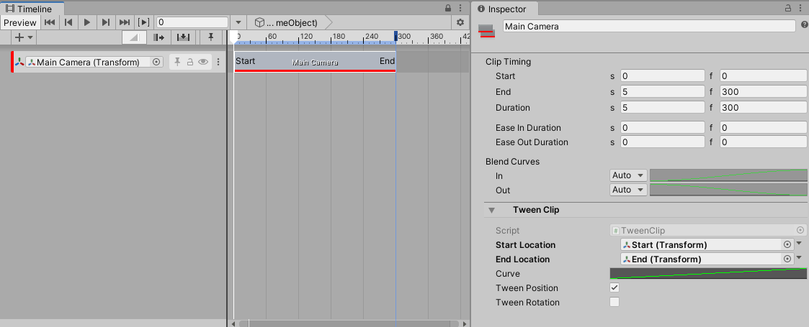
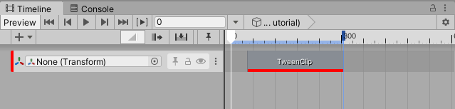
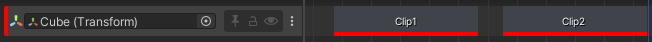
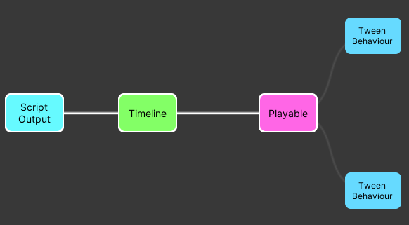
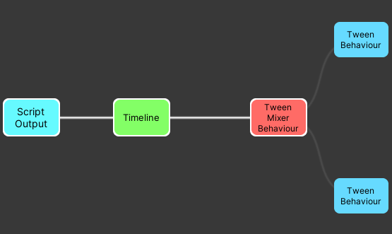

Transform Tween track sample¶

This track can be used for simple transform movements between two points.
Usage¶
This track can be used for simple transform movements. All translation happens in a straight line but the speed can be controlled with an animation curve. The Tween track binds to the scene Transform you wish to move.
Field |
Description |
|---|---|
Start Location |
This is a reference to a Transform in the scene that marks the position and/or rotation of the moving Transform when the playable starts. If it is left null the position/rotation of the moving Transform when the playable starts will be used. |
End Location |
This is a reference to a Transform in the scene that marks the position and/or rotation of the moving Transform when the playable finishes. |
Tween Position |
Whether or not the position of the Transform should change. |
Tween Rotation |
Whether or not the rotation of the Transform should change. |
Custom clip workflow example¶
This example will demonstrate how to:
create a custom clip, track and mixer;
use the PlayableGraph API to animate an object’s transform;
customize a clip with
ClipEditor;
1. Custom clip¶
when a Timeline begins playing, nodes called Playables are created. They are organized in a tree-like structure called the PlayableGraph. For each frame, Timeline samples this graph to read and mix multiple data sources (animation, audio and more).
The first step to create a custom clip is to define a new PlayableBehaviour that will be added to a graph. It will need to store the data needed to implement the transform tween:
public class TweenBehaviour : PlayableBehaviour
{
public Transform startLocation;
public Transform endLocation;
public bool shouldTweenPosition;
public bool shouldTweenRotation;
public AnimationCurve curve;
}
The PlayableBehaviour’s data is not serialized and will be lost once its parent graph is destroyed. To save this data, the next step is to define a new PlayableAsset:
[Serializable]
public class TweenClip : PlayableAsset
{
public ExposedReference<Transform> startLocation;
public ExposedReference<Transform> endLocation;
public bool shouldTweenPosition = true;
public bool shouldTweenRotation = true;
public AnimationCurve curve;
//...
}
Note: The clip needs to store a start and an end location. Since an asset cannot directly reference a scene object, it cannot store a transform object directly. This is why an ExposedReference<Transform> is used.
A PlayableAsset’s main purpose is to build a PlayableBehaviour. This is done with the CreatePlayable method:
public class TweenClip : PlayableAsset
{
//...
public override Playable CreatePlayable(PlayableGraph graph, GameObject owner)
{
// create a new TweenBehaviour
ScriptPlayable<TweenBehaviour> playable = ScriptPlayable<TweenBehaviour>.Create(graph);
TweenBehaviour tween = playable.GetBehaviour();
// set the behaviour's data
tween.startLocation = startLocation.Resolve(graph.GetResolver());
tween.endLocation = endLocation.Resolve(graph.GetResolver());
tween.curve = curve;
tween.shouldTweenPosition = shouldTweenPosition;
tween.shouldTweenRotation = shouldTweenRotation;
return playable;
}
}
CreatePlayable will initialize a new TweenBehaviour using TweenClip’s data.
2. Custom track¶
A custom track is created by defining a TrackAsset subclass. The following attributes can be added to a TrackAsset:
TrackBindingType: defines which type of object should be bound to a track;
TrackClipType: defines which type of clip should be associated to a track.
For this example, the track needs a Transform object binding and can only accepts clips of type TweenClip, which was previously defined in step 1:
[TrackBindingType(typeof(Transform))]
[TrackClipType(typeof(TweenClip))]
public class TweenTrack : TrackAsset
{
// ...
}
The data setup is complete; TweenTrack and TweenClip can now be added to a timeline:

However, no transform tween has been implemented yet. To do this, a track mixer is needed.
3. Define a track mixer¶
To properly handle blending, or crossfading, between two clips, a track mixer is needed. A track mixer is a PlayableBehaviour that will have access to all clips data and will blend those together.
Track mixer setup¶
By default, when a track is added to a timeline, an empty playable is generated and is connected to each clip’s playable.
For example, this track:

will generate the following playable graph:

Timeline: this playable is therootplayable; all playables related to tracks are connected to this node.Playable: this playable represents the track mixer. Since no track mixer is defined, an empty one is generated.TweenBehaviour: this playable represents a clip. One per clip is generated. All clip playables are connected to the track mixer.
In order to define a custom track mixer, a new PlayableBehaviour needs to be defined:
public class TweenMixerBehaviour : PlayableBehaviour {}
then, in TrackAsset, the CreateTrackMixer method can be used to specify a custom track mixer:
public class TweenTrack : TrackAsset
{
public override Playable CreateTrackMixer(PlayableGraph graph, GameObject go, int inputCount)
{
return ScriptPlayable<TweenMixerBehaviour>.Create(graph, inputCount);
}
}
Now the playable graph looks like this:

The empty playable that used to connect clip playables together is now replaced by TweenMixerBehaviour.
Transform tween implementation¶
The implementation of the transform tween resides in the ProcessFrame method from TweenMixerBehaviour. Here are the main steps of that implementation:
Initialization: When the timeline is first played, the initial transform of the track binding is fetched. If the start or end transform is
null, the initial transform will be used instead.Get clip behaviours & weights: to appropriately blend, the mixer needs to ask information for all of its inputs (clips):
// Iterate on all the playable's (mixer) inputs (ie each clip on the track)
int inputCount = playable.GetInputCount();
for (int i = 0; i < inputCount; i++)
{
// get the input connected to the mixer
Playable input = playable.GetInput(i);
// get the weight of the connection
float inputWeight = playable.GetInputWeight(i);
// get the clip's behaviour
TweenBehaviour tweenInput = GetTweenBehaviour(input);
}
Calculate and blend: A linear interpolation is used to calculate a transform between two points.
Apply result: Once the calculation is done, the transform is written in the track binding object:
// Apply the final position and rotation values in the track binding
trackBinding.position = accumPosition + m_InitialPosition * (1.0f - totalPositionWeight);
trackBinding.rotation = accumRotation.Blend(m_InitialRotation, 1.0f - totalRotationWeight);
4. Customize a clip’s appearance¶
ClipEditor can be used to augment the capabilities of a clip in the editor. It works like a custom Inspector; the CustomTimelineEditor attribute is used to tell Timeline that a ClipEditor class should be associated to a given clip.
[CustomTimelineEditor(typeof(TweenClip))]
public class TweenClipEditor : ClipEditor
{
//...
}
It is possible to customize the appearance of a clip with the DrawBackground method:
public override void DrawBackground(TimelineClip clip, ClipBackgroundRegion region)
{
TweenClip asset = clip.asset as TweenClip;
if (asset == null)
return;
// Drawing code here...
}
Notes¶
Only the portion between (0,1) of the curve will be used.
When a clip ends, the object bound to the track will return to its original position.